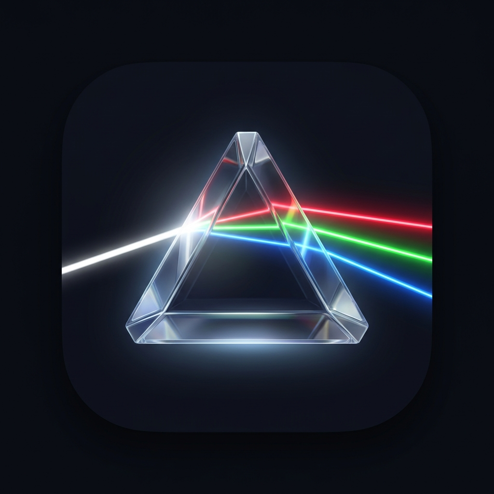

NewsPrism
赤: 興味
緑: 思想近さ
青: 客観事実
◀ 前日
翌日 ▶
摂取バランス:
計算中...
📤 シェア
立体スペクトラム空間
粒子をクリックして記事選択
▲ 興味：高 (Red)
▼ 興味：低
◀ 思想：遠 (異論)
思想：近 (Green) ▶
第3軸：客観事実度フィルター (Blue)
0% 以上
主観論評を含む
純粋な一次データのみ
全表示
白 (神記事: 高関心×共感×事実)
マゼンタ (刺激的異論: 高関心×異論)
シアン (未知の事実: 低関心×事実)
読み込み中...
混色オーラ
メディア名
📅 配信日時
タイトル
📌 記事の深掘り3行要約（中身の理解）
【AI中立クッション】
解説文
あなたの知覚リアクションを記録：
💖 共感・納得
⚡ 刺激的異論
💡 目から鱗
📊 客観データ認定
元記事を読む ↗
閉じる